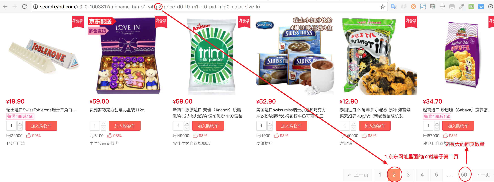

Python爬虫如何实现京东商品翻页
|上次我讲解关于一篇Python爬虫京东商品列表的文章，大家都知道了。我现在本篇主要讲解关于如何爬虫实现翻页的文章。我希望本文也许能帮助你们。
先把京东网址的翻页有多少，就可以遍历商品列表

抓取翻页的最大数量
turnPageBottom = soup.find("a",{"id": "lastPage"}).string #抓取翻页的最大数量
for循环常与range函数一起使用
for index in range(int(turnPageBottom)):
print(index+1)
输出结果
1
2
.
.
47
48
49
50
然后用加上就是p=str(index+1),就可以遍历获取翻页的网址
for index in range(int(turnPageBottom)):
urlpage = "http://search.yhd.com/c0-0-1003817/mbname-b/a-s1-v4-p"
page = urlpage + str(index+1) + "-price-d0-f0-m1-rt0-pid-mid0-color-size-k/"
print(page)
输出结果
http://search.yhd.com/c0-0-1003817/mbname-b/a-s1-v4-p1-price-d0-f0-m1-rt0-pid-mid0-color-size-k/
http://search.yhd.com/c0-0-1003817/mbname-b/a-s1-v4-p2-price-d0-f0-m1-rt0-pid-mid0-color-size-k/
...
http://search.yhd.com/c0-0-1003817/mbname-b/a-s1-v4-p50-price-d0-f0-m1-rt0-pid-mid0-color-size-k/
现在我们写的完整项目
# -*- coding: utf-8 -*-
#---------------------------------------
# 程序：商品爬虫
# 版本：0.0.1
# 作者：woaitianwen
# 日期：2018-2-3
# 语言：Python 3.6
# 操作：输入网址后就获取商品列表，然后存到mysql数据库
#---------------------------------------
from urllib.request import urlopen
from bs4 import BeautifulSoup
import re
import mysql.connector
#连接mysql数据库
conn = mysql.connector.connect(user='root', password='root', database='mynode')
#使用cursor()方法获取操作游标
cur = conn.cursor()
url = "http://search.yhd.com/c0-0-1003817/mbname-b/a-s1-v4-p1-price-d0-f0-m1-rt0-pid-mid0-color-size-k/?ref=ad.21102_47515303_1#page=2&sort=1";
html = urlopen(url) #请求网址
soup = BeautifulSoup(html, "lxml") #解析网页信息
proPrice = soup.select("p.proPrice em") #抓取价格
pdlink2 = soup.select('p.proName > a') #抓取商品名称
turnPageBottom = soup.find("a",{"id": "lastPage"}).string #抓取翻页的最大数量
for index in range(int(turnPageBottom)):
#print(index+1)
urlpage = "http://search.yhd.com/c0-0-1003817/mbname-b/a-s1-v4-p"
page = urlpage + str(index+1) + "-price-d0-f0-m1-rt0-pid-mid0-color-size-k/"
#print(page)
html = urlopen(page) # 请求网址
soup = BeautifulSoup(html, "lxml") # 解析网页信息
proPrice = soup.select("p.proPrice em") # 抓取价格
pdlink2 = soup.select('p.proName > a') # 抓取商品名称
for title,price in zip(pdlink2,proPrice):
data = [] # 建一个列表，用于存放数据
try:
title = title.contents[-1] #将列表中的每一个商品信息提取出来
price = price.contents[-1] #将列表中的每一个商品价格提取出来
# 正则表达式
dr = re.compile(r'\n|',re.S)
# 正则的替换
dd_title = dr.sub('', title)
dd_price = dr.sub('', price)
# 移除空格
dd_s_title = dd_title.strip()
dd_s_price = dd_price.strip()
#print("[*] 商品标题:", title) #输出商品标题
#print("[*] 商品价格:", price) #输出商品价格
data.append([dd_s_title,dd_s_price]) ##将爬取的数据依次填入列表中
print(data)
sql = "INSERT INTO goods (title,price) values(%s,%s)" # 这是一条sql插入语句
cur.executemany(sql, data) # 执行sql语句，并用executemany()函数批量插入数据库中
conn.commit()
except Exception as e:
print(e)
conn.rollback()
# 释放数据连接
if cur:
cur.close()
if conn:
conn.close()
我不再重复讲解具体的内容，大家都可以去看看我上次讲解关于：《Python爬虫京东商品列表》